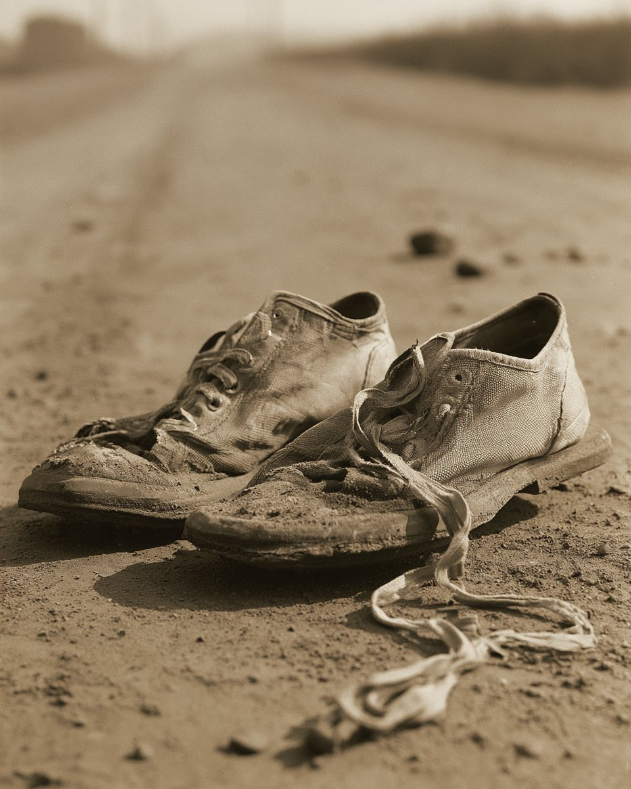
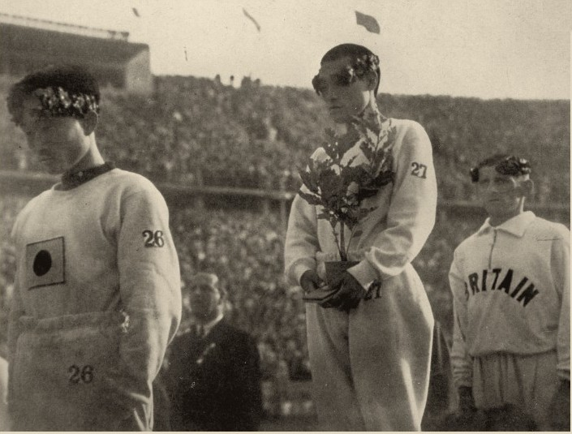
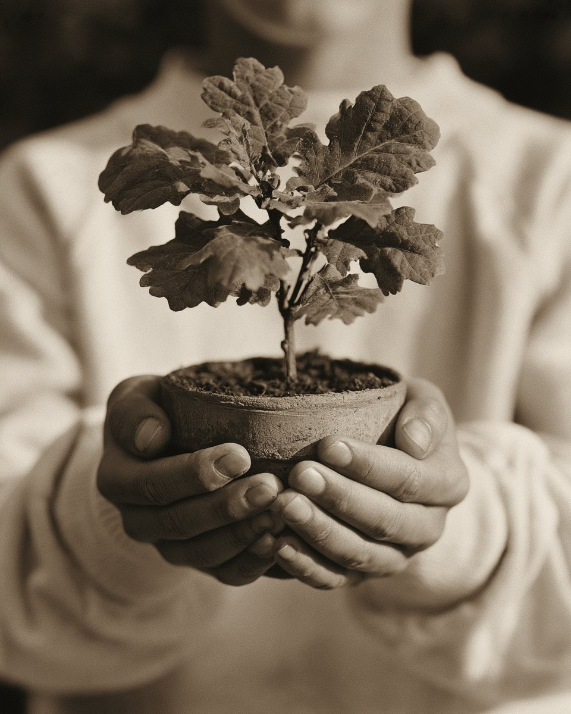
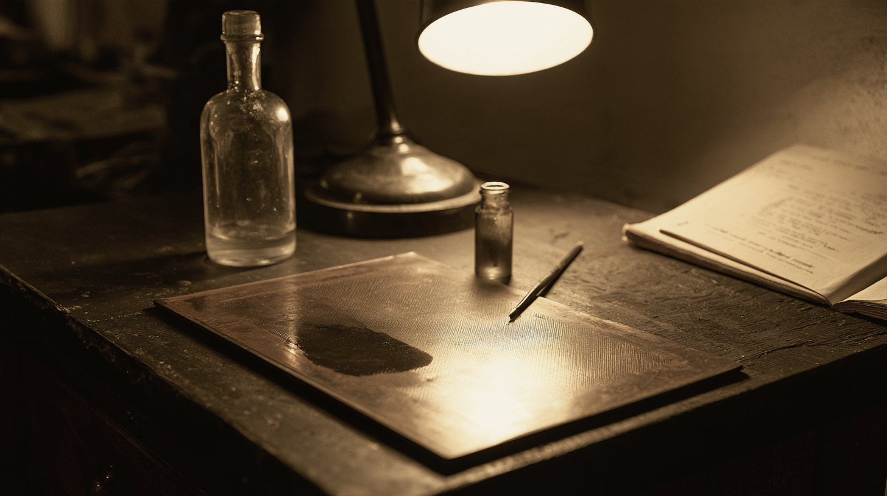
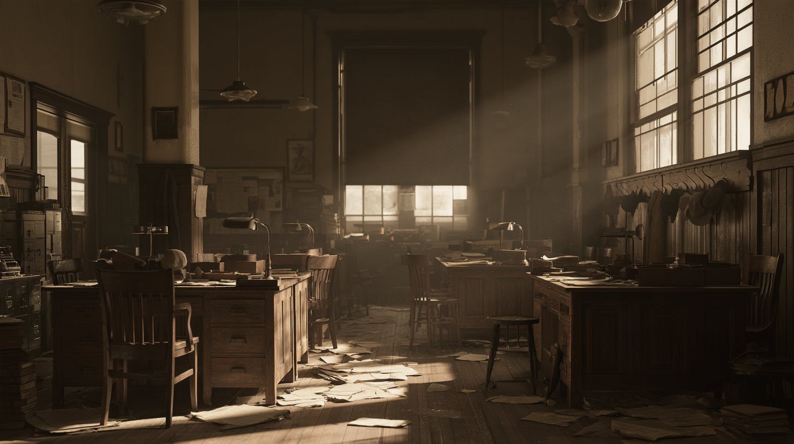

손긔졍 군의 가슴에서 사라진 표지 한 장. 그 한 번의 붓질에, 여러 사람과 한 신문이 값을 치럿소.
原文동아일보 1936.8.11 · 8.13 · 8.25 · 조선일보 8.10 호외
아래로
이 지면이 쫏는 물음세 가지
原文동아일보 1936.8.11 · 8.13 · 8.25 · 조선일보 8.10 호외
一
무엇이 지워젓나
소화 십일 년 팔월, 한 조선 청년의 사진에서 — 무언가 하나가 사라젓소.
二
누가, 왜 지웠나
붓을 든 손은 하나가 아니엇소. 처음 그 뜻을 낸 이가 누구인지는 — 지금도 말이 엇갈리오.
三
그 값은 무엇이엇나 봉함
지면 가운데서 드러나오.
사람들이 끌려갓고, 한 신문이 아홉 달 동안 말을 일헛소.
출처 · 동아일보 1936년 8월 11일 · 13일 · 25일자 지면 · 조선일보 1936년 8월 10일 호외 · 10월 18일자 · 한국민족문화대백과사전 「일장기 말소 사건」 · 경기도 경찰부장 보고(경인일보 인용)
序
소화 십일 년 팔월 구일 밤
백림은 오후 세 시. 경성은 장마비 나리는 밤 — 세종로 동아일보사 압헤, 우산을 쓴 사람들이 모여드럿소.
오후 열한 시 이 분
실제 기록 영상 출발선 · 소화 십일 년 팔월 구일 백림 올림픽 스타디움 · 소리 업슴영상 · 유튜브 「손기정 선수 마라톤 우승 영상 (1936년 베를린 올림픽)」(역사매니아) 재인용
그리고 그 밤 — 세종로 사옥의 스피커가 켜졋소. 아래 검은 화면이 나오면 — 손가락으로 화면을 천천히 위로 밀어 올리시압. 미는 만큼 그가 달리고, 시계와 킬로가 흘러가오.

그림 · 재현
그 길을 달린 발 · 재현 그림
근거 · 동아일보 2006년 4월 1일 창간특집 「1936년 8월 10일 새벽 동아일보 앞 뜨거웠던 함성」 · 구간 기록과 순위 · Olympedia 「1936 마라톤 결과」 (15km 49:45 · 28km 자바라 낙오 · 31km 손기정 선두) · 그 밤의 세종로는 다시 꾸밈(再構成)
第一章
기뻐한 지면
그날부터 닷새, 경성의 지면은 기뻐하엿소. 아직 아모것도 지우지 안코.
조선일보 1936.8.10 호외 · 동아일보 8.11 ~ 8.13
보도 · 號外기뻐한 지면
原文조선일보 1936.8.10 호외 · 동아일보 8.11 ~ 8.13
날짜를 넘기며 그 닷새 가운데 네 날의 지면을 읽으시압. 넷째 장 팔월 십삼일 — 이날 처음으로, 다른 판의 사진에서 가슴이 지워지오.
「우리는 이미 헐린 성일망정 새 힘과 새 마음으로 우리 두 용사를 맞어 드리리라.」
동아일보 소화 십일 년 팔월 십일일자 일면 「세계제패의 개가」 — 마라손 승자를 마즈려 성벽을 헐엇다는 희랍 고사를 들어
「헐린 성」 — 나라를 일흔 땅을, 지면은 그러케 불럿소. 가튼 말이, 세 번 지면에 올랏소.
8.9 · 경긔 당일 · 팔면
「우리는 이미 헐린 성일망정 두 문을 활짝 열어 맞어드리리라.」
8.11 · 우승 이튿날 · 일면
「이미 헐린 성일망정 새 힘과 새 마음으로…」
8.16 · 「마라손의 전설과 유래」 · 삼면
「이미 헐린 성벽이어니 우리는 길을 쓸고 문전을 닦어…」
원문 대조 · 네이버 뉴스 라이브러리 (동아일보 1936.08.09 8면 · 08.11 1면 · 08.16 3면)
第二章
가슴을 가린 나무
그런데 그 닷새 동안 — 시상대 우의 그는, 웃지 아넛소.
소화 십일 년 팔월 구일 · 백림 올림픽 스타디움
시상대 · 月桂樹가슴을 가린 나무
解說시상대의 묘목 — 교육과 문화 · 서울시 미디어허브
팔월 구일, 백림 올림픽 스타디움. 그는 고개를 숙엿고, 두 손에 든 묘목을 가슴께까지 끌어올렷소.

사진을 누르시압 — 두 사람의 가슴을 차례로 비추오.
실제 기록 사진 시상대 · 소화 십일 년 팔월 구일
그 나무
우승자에게 준 묘목은 오래 「월계수」로 불럿소. 실은 — 대왕참나무엿소.
그는 이 나무를 가지고 도라와, 다니든 양정고보 교정에 심엇소.
나무는 아즉 살아 잇소. 서울 중구 만리동 손기정체육공원에.

그림 · 재현
묘목을 든 손 · 재현 그림
한 사람은 나무로 가렷소. 이제 — 신문이 가릴 차례엿소.
근거 · 실제 기록 사진 (1936년 8월 9일 베를린 시상식) · 교육과 문화 「대왕참나무 혹은 손기정참나무」 · 서울시 미디어허브 「손기정체육공원」
第三章
지운 손
팔월 이십오일, 광화문통 동아일보 편집국. 사진 한 장이 책상 우에 노엿소.
동아일보 1936.8.25 · 일장긔를 지운 사진
붓 · 原文그 가슴을, 지면에 그대로 실을 수는 업섯소.
原文동아일보 1936.8.25 · 일장긔를 지운 사진
그날 편집국의 손이 되어 — 손가락으로 가슴의 표지를 문지르시압.
夕刊
체육긔자 이길용이, 조사부 이상범 화백에게 청햇소 — 「흐릿하게 해 주시오」.
화백의 붓이 사진 우의 그 자리에 색을 입혓소.
사진부 신낙균·서영호가, 동판에 남은 표지를 약물로 지웠소.
그리고 — 석간이 찍혀 나갓소.
※ 우의 차례는 뒤에 경긔도 경찰부장이 올린 보고에 적힌 대로오. 잡아간 쪽이 남긴 긔록이오.

그림 · 재현
동판 · 재현 그림
發覺 · 이번에는, 들켯소
8.25
열이틀 전과 가튼 가슴이엇소. 그러나 이번에는 — 석간이 나간 그날, 총독부가 신문의 발매를 멈추고 관계자들을 끌고 갓소.
8.29
무긔정간. 창간 뒤 네 번째엿소.
그 뒤
같은 사진을 옮겨 실은 잡지 『신동아』 — 잡지부장도 끌려갓고, 잡지는 그 길로 끗이 낫소.
근거 · 한국민족문화대백과사전 「일장기 말소 사건」 · 경인일보 「일장기 말소사건의 주역 이길용과 신낙균」(경기도 경찰부장 보고 인용) · 인쇄 사진 · 동아일보 1936년 8월 25일자 이면
第四章
끌려간 여덟, 물러난 셋
그 붓질의 값은, 사람으로 치러졌소.
동아일보 편집국 · 소화 십일 년 팔월 말
名簿편집국 명부
解說구속 · 서약 — 한국민족문화대백과사전 · 경인일보
사진이 나간 뒤, 동아일보 편집국의 의자들이 하나씩 비엇소. 내려가면 — 한 사람씩, 도장이 찍히오.
東亞日報 編輯局소화 십일 년 팔월 말재구성
사회부장현진건소설 「운수 조흔 날」을 쓴 이拘禁
사회부이길용체육 긔자拘禁
사회부장용서긔자拘禁
조사부이상범화백拘禁
사진부신낙균拘禁
사진부백운선拘禁
사진부서영호拘禁
잡지부장최승만『신동아』에 가튼 사진을 옮겨 실은 책임拘禁
사장송진우辭任
주필김준연辭任
편집국장설의식辭任

그림 · 재현
의자만 남은 편집국 · 재현 그림
풀려나며 쓴 서약
약 사십 일 뒤, 여덟은 풀려낫소. 문을 나서기 전에 이런 글을 써야 하엿소.
다시는 언론긔관에 참여하지 아니함
시말서를 씀
다시 일이 나면, 가중 처벌을 달게 바듬
이길용은 그 일로 신문사를 떠낫소. 그리고 1950년 칠월 — 북으로 끌려가 도라오지 못하엿소.

 夕刊
夕刊